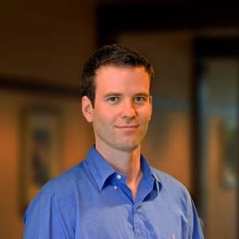

About Me

I am originally from Rye, NY -- I went to college at Elon University. I have lived in New York, North Carolina, Arkansas, New Mexico, Colorado, California and Maine. I studied Physics at Elon, after switching over from Economics (I have a minor in Economics). I also have a graduate certificate in electrical engineering from Santa Clara University, and completed about a year of M.S. work in electrical engineering. I enjoy nature and the outdoors, along with any activities that get me out in wilderness environments, these include: whitewater rafting, alpine skiing, mountain biking, hiking, camping and more!
I have worked as a guide for a whitewater rafting company, at a bike shop, as a ski instructor, and as a customer support engineer at a SaaS startup (which basically meant I did a little bit of everything imaginable). Now I am looking forward to seeing where this new set of acquired skills in full stack web development will take me! I am not currently fixated on any sort of role in particular, and I am looking forward to seeing what ideas and focuses this program will lead me towards!